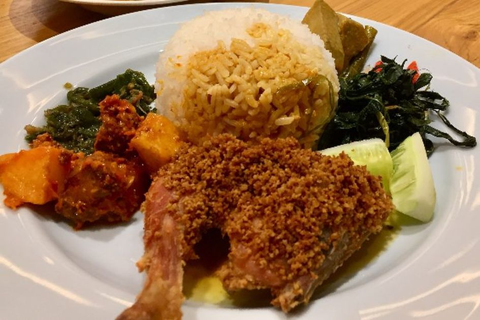

Nasi Padang
Nasi Padang adalah hidangan khas Minangkabau yang terdiri dari nasi putih disajikan dengan berbagai macam lauk-pauk. Kata “Padang” merujuk pada ibu kota Provinsi Sumatera Barat, tempat hidangan ini berasal. Restoran yang menyajikan Nasi Padang dikenal sebagai “Rumah Makan Padang” dan biasanya dimiliki serta dikelola oleh orang Minangkabau. Sejarahnya bermula pada abad ke-19 ketika Padang menjadi pusat aktivitas ekonomi dan transportasi di Sumatera Barat. Lauk-pauk khas Nasi Padang meliputi gulai dengan kol, nangka muda, dan kacang panjang. Selain itu, Nasi Padang juga merupakan komoditas ekspor paling terkenal dari Indonesia dan memiliki kontribusi besar dalam masakan Indonesia
Roti Bakar
Roti bakar adalah sebuah roti lapis khas Indonesia yang dibakar, terdiri dari dua potong roti dan isian seperti gula, margarin, mentega, meses, selai coklat, keju, selai kacang, selai stroberi, serikaya, atau nutella. Hidangan ini sering dijadikan sarapan cepat dan dikenal sebagai makanan jalanan, Awalnya, roti bakar diciptakan untuk mengawetkan roti sisa. Pada masa krisis pangan di Eropa abad ke-18 hingga 19, orang-orang memanfaatkan roti yang sudah tidak segar dengan cara memanggangnya, Kini, roti bakar telah mengalami perkembangan pesat, dan variasi menu yang beragam dapat ditemukan di seluruh Indonesia
Kebab

Sejarah keberadaan kebab berawal dari penduduk Persia di abad ke-8 yang mulai tersebar hingga ke seluruh wilayah di Timur Tengah. Kebab ini kemudian sampai di India sekitar abad ke-15. Kepopuleran kebab sendiri bukan dari daerah Persia ataupun India, melainkan di Turki. Pada abad ke-16, kebab yang mendarat di daerat Turki mulai diperkenalkan oleh para tentara Turki ke seluruh dunia. Sehingga yang diketahui masyarakat luas sekarang, kebab berasal dari Turki. Walaupun begitu, kebab menjadi salah satu jajanan khas yang berasal dari wilayah Timur Tengah. Berlanjut pada penyebarannya hingga ke seluruh dunia, kebab mulai diperkenalkan para pedagang Turki yang singgah di Jerman di abad ke-18. Dalam penyajiannya pun, kebab khas Turki ini menjadi sedikit berubah, karena mengikuti selera orang Jerman kala itu. Kebab diisi dengan isian daging, selada, dan irisan paprika yang kemudian dibungkus dengan kulit tortilla. Makanan ini cukup popular hingga merambah ke berbagai negara di Eropa dan sampai ke seluruh dunia. Kebab juga dinilai mampu bersaing dengan makanan siap saji lainnya seperti burger.